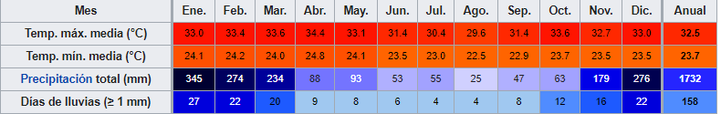

Geografia
Bali es parte de las Islas menores de la Sonda. Tiene apenas 140 km de longitud este-oeste y 90 km de norte a sur, y una superficie de 5636 km. Esta situada aproximadamente a ocho grados al sur de la linea del Ecuador. Al oeste el estrecho de Bali, de 2,4 a 3,2 km de ancho, la separa de Java. Al este el profundo estrecho de Lombok, de entre 18 y 40 km de ancho, la separa de la isla de Lombok; tiene adyacentes las reducidas islas de Nusa Penida, Nusa Lembongan y Nusa Ceningan, separadas de Bali por el estrecho de Badung. El estrecho de Lombok coincide con el paso de la linea de Wallace que separa la ecozona Indomalaya de la ecozona Australasia. La isla se compone de una cordillera que se extiende de este a oeste. El punto mas alto de la isla es el monte Agung con 3142 m de altura, un volcan en actividad, que entro en erupcion por ultima vez en marzo de 1963. La ladera norte es abrupta, con una estrecha llanura costera, mientras que la ladera sur baja suavemente hacia una llanura aluvial, regada por rios poco profundos, seca en las estaciones secas e inundada durante periodos de fuertes lluvias. La isla se encuentra rodeada por arrecifes de coral. Las playas en el sur son de arena blanca mientras que las del norte son de arena negra.
Clima
Bali tiene un clima tropical monzonico, con una estacion lluviosa de octubre a marzo y una estacion seca de junio a septiembre. Durante el dia la temperatura media es de 20 a 33 centigrados, pero las cordilleras tienen temperaturas nocturnas mas frias debido a la altitud.
